조경기사 (2016-03-06 기출문제)
1과목: 조경사
1. 그라나다에 소재한 해네랄리페(Generalife) 정원에 관한 설명으로 틀린 것은?
- 수로의 중정(court of canal)이 있다.
- 정원 전체가 3개의 노단(Terrace)으로 이루어졌다.
- 「ㅂ」 자형(또는 U자형)의 연못이 조성된 사이프레스의 중정이 있다.
- 알함브라의 내부지향적 구도와는 반대로 외부 지향적인 구도로 언덕 위에 지어졌다.
(정답률: 59%)

2. 프랑스 르네상스 시대 평면기하학식 정원의 특징이 아닌 것은?
- 자수 화단
- 축
- 총림
- 굽이치는 원로
(정답률: 78%)
3. 다음 중 창덕궁에 속한 지당(池塘)의 형태가 나머지와 다른 것은?
- 빙옥지
- 부용지
- 존덕지
- 애련지
(정답률: 64%)
4. 르네상스 시대의 조경은 예술 양식과 더불어 발달되어 왔는데 시대 순으로 올바른 것은?
- classicism → mannerism → baroque → rokoko
- mannerism → classicism → baroque → rokoko
- baroque → rokoko → mannerism → classicism
- mannerism → baroque → rokoko → classicism
(정답률: 65%)
5. 다음 중 이탈리아 르네상스 시대의 정원으로서 10개의 노단(Ten Terraces)으로 이루어진 바로크식 정원은?
- Villa Lante
- Isola Bella
- Villa Farnese
- Villa Petraia
(정답률: 78%)
6. 다음 중 경복궁 교태전 후원과 관계없는 것은?
- 아미산이라 칭함
- 화계가 있음
- 산량전이 있음
- 4개의 육각형 굴뚝이 있음
(정답률: 77%)
7. 이탈리아의 르네상스 시대 빌라로 평면적 구성은 병렬형이고, 정원의 주 구조물인 카지노가 테라스의 최상단에 위치하고 있는 것은?
- 랑테장(Villa Lante)
- 데스테장(Villa d 'Este)
- 벨베데레장(Villa Belvedere)
- 알도브란디니장(Villa Aldobrandini)
(정답률: 75%)
8. 중국 청나라 시대에 조영된 북경의 북서부에 위치한 삼산오원(三山吾園) 중 규모가 가장 큰 정원은?
- 명원
- 정명원
- 원명원
- 이화원
(정답률: 71%)
9. 한옥은 주택공간상 사랑채의 분리로 사랑마당 공간이 생겼는데, 이 사랑마당 공간의 분할에 가장 많은 영향을 미친 사상은?
- 불교사상
- 유교사상
- 풍수지리설
- 도교사상
(정답률: 78%)
10. 인도 무굴왕조의 시대별 정원들 가운데 조성된 시기와의 연결이 맞는 것은?
- 샤자한시대 - 니샤트 바그
- 후마윤시대 - 차스마 샤히
- 아쿠바르시대 - 니심바그
- 자한기르시대 - 타지마할
(정답률: 48%)
11. 영국의 남동쪽 지방에 있으며 버어질(Virgil)의 서사시 에이니드(Aeneid)에 의거하여 자연을 배회하는 영웅의 인생 항로를 테마로 정원동굴(grotto)이 구성된 풍경식정원은?
- 스토우원(Stowe garden)
- 스투어헤드원(Stourhead garden)
- 트위컨햄원(Twickenham garden)
- 블렌하임궁원(Blenheim palace garden)
(정답률: 60%)
12. 일본 침전조 정원 양식과 관련된 저서는?
- 해유록
- 송고집
- 작정기
- 벽암록
(정답률: 84%)
13. 고대 그리스의 아도니스원에 대한 설명으로 적합한 것은?
- 후일의 시민관장으로 발달
- 물이 가장 중요한 요소로서 등장
- 식물의 도입은 밀, 보리, 상추 등을 분에 식재
- 신을 모신 정원으로 열식된 수목에 의해 위요된 공간
(정답률: 75%)
14. 미국 뉴욕의 센트럴 파크 조성을 위하여 옴스테드와 캘버트 보가 제시한 그린스워드 플랜(Green sward Plan)의 특징이 아닌 것은?
- 입체적 동선체계
- 장식화단 배치
- 공원 주변의 차음ㆍ차폐를 위한 완충녹지 조성
- 보트 타기와 스케이팅을 할 수 있는 넓은 호수
(정답률: 72%)
15. 일본의 작정기(作定記)가 쓰여진 연대에 일본에서 유행하던 정원양식은?
- 고산수정원
- 임천식정원
- 정토정원
- 침전조정원
(정답률: 75%)
16. 정원유적은 시나 그림에 의해 유구 없이도 조영과 작정자의 의도를 어느 정도 파악해 볼 수 있다. 별서나 정자 등의 외부공간 연구를 위한 기초자료로 가장 적합한 것은?
- 기(奇)
- 경(景)
- 유(遺)
- 음(音)
(정답률: 73%)
17. 중국 진나라 도연명의 안빈낙도하는 원림생활과 관련된 것은?
- 난정서
- 독락원기
- 귀거래사
- 동파종화
(정답률: 67%)
18. 중국의 정원관련 고문헌 중 저자와 저서가 옳은 것은?
- 이격비의 오흥원림기
- 주밀의 낙양명원기
- 이어의 장물지
- 왕세정의 유금릉제원기
(정답률: 71%)
19. 다음의 정원 중 정원양식상 종교적 성향이 다른 하나는?
- Alhambra 의 정원
- Taj Mahal 의 정원
- Alcazar 의 정원
- Stowe 의 정원
(정답률: 75%)
20. 고려시대 궁궐정원을 맡아보던 관서는?
- 내원서
- 상림원
- 장원서
- 사복시
(정답률: 72%)
2과목: 조경계획
21. 다음 공개 공지의 설명 중 ( )안에 알맞은 숫자는?
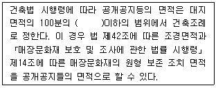
- 10
- 15
- 20
- 30
(정답률: 57%)
22. 도시공원의 계획과정이 순서대로 옳게 나열된 것은?
- 지표계획 수립 → 물적(物的)계획 수립 → 계획과재의 정립 → 사업집행계획 수립
- 지표계획 수립 → 계획과재의 정립 → 사업집행계획 수립 → 물적(物的)계획 수립
- 계획과재의 정립 → 지표계획 수립 → 물적(物的)계획 수립 → 사업집행계획 수립
- 계획과재의 정립 → 지표계획 수립 → 사업집행계획 수립 → 물적(物的)계획 수립
(정답률: 54%)
23. 3계절형인 공원에서 연간이용자수를 150,000명으로 추정할 때 「최대일이용자수」는 얼마인가?
- 2,140명
- 2,500명
- 3,000명
- 3,500명
(정답률: 69%)
24. 다음 중 모테이션 심벌(motation symbols)이라 불리는 인간행동의 움직임의 표시법을 고안하여 인간의 움직임을 기록하고 동시에 설계할 수 있도록 한 인물은?
- 린치(Lynch)
- 할프린(Halprin)
- 스타이니츠(Steinitz)
- 제이콥스와 웨이(Jacobs and Way)
(정답률: 75%)
25. 관광, 레크레이션 수요추적에 사용되는 시설 가동률에 대한 설명으로 옳지 않은 것은?
- 시설의 경영상 수지분기점이 되는 지표이다.
- 시설의 연중 평균이용률을 고려하여 설정한다.
- 경영효율은 상한선보다 하한선 설정이 더 중요하다.
- 관광수요가 가장 극대점에 도달하는 계절에는 100%를 초과하여 수요추정을 한다.
(정답률: 69%)
26. 『도시공원 및 녹지 등에 관한 법률』의 공원녹지기본계획의 수립 설명 중 ( )안에 적합한 숫자는?
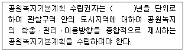
- 3
- 5
- 10
- 20
(정답률: 61%)
27. 「도시ㆍ군계획시설의 결정ㆍ구조 및 설치기준에 관한 규칙」상 도로의 배치간격 기준이 맞는 것은? (단, 시ㆍ군의 규모, 지형조건, 토지이용계획, 인구밀도 들을 감안한 것으로 본다.)
- 주간선도로와 주간선도로의 배치간격 : 2000미터 내외
- 주간선도로와 보조간선도로의 배치간격 : 500미터 내외
- 보조간선도로와 집산도로의 배치간격 : 1000미터 내외
- 국지도로간의 배치간격 : 가구의 짧은변 사이의 배치간격은 250미터 내외
(정답률: 57%)
28. 『주택건설기준 등에 관한 규정』에 따른 우리나라 아파트 단지계획시 주변의 소음도가 일정기준 초과시 방음벽 혹은 방음식재를 설치해여 하는 최소치 기준은 몇 데시벨인가?
- 55
- 60
- 65
- 70
(정답률: 74%)
29. 환경에 영향을 미치는 상위계획을 수립할 때에 환경보전계획과의 부합 여부 확인 및 대안의 설정ㆍ분석 등을 통하여 환경적 측면에서 해당 계획의 적정성 및 입지의 타당성 등을 검토하여 국토의 지속가능한 발전을 도모하는 것은?
- 환경영향평가
- 재해영향평가
- 전략환경영향평가
- 소규모 환경영향평가
(정답률: 47%)
30. 『자연환경보전법』상 자연경관영향의 협의대상이 되는 일반기준에서 경계로부터의 거리가 옳은 것은? (단, 도시지역 및 관리지역의 거리기준은 제외한다.)
- 습지보호지역 : 500m
- 자연공원(해상형) : 700m
- 자연공원(최고봉 1200m 이상) : 1500m
- 생태ㆍ경관보전지역(최고봉 700m 이상) : 1000m
(정답률: 49%)
31. 다음 중 아파트단지 내 울타리 차단방법이 아닌 것은?
- 차단용에 필요한 토지를 최대한 확보해야 한다.
- 쉽게 설계, 시공되고 상품화될 수 있어야 한다.
- 다양한 높이와 형태로 지형에 적응될 수 있어야 한다.
- 어두운 재료를 사용할 때는 즉시 효과적인 차단이 필요한 경우이다.
(정답률: 55%)
32. GIS에서 사용되는 벡터모델의 기본요소가 아닌 것은?
- Grid
- Line
- Point
- Polygon
(정답률: 62%)
33. 다음 중 설문조사의 특성에 관한 설명으로 옳지 않은 것은?
- 설문지는 우편이나 전화를 통해 작성되기도 한다.
- 설문에 걸리는 시간은 결과에 영향을 주지 않는다.
- 설문지에 의한 조사는 문제의 성격이 명확할 때 사용하는 것이 좋다.
- 설문의 유형으로는 자유응답, 제한응답, 시각적 응답 등의 유형이 있다.
(정답률: 80%)
34. 제이콥스와 웨이(Jacobs and Way, 1968)는 광역적인 개발행위가 경관에 미치는 영향에 대하여 시간적 투과성, 흡수성에 따른 개발의 영향력으로 설명하고 있다. 이에 대한 바른 설명은?
- 시각적 투과성이 높은 곳은 시각적 흡수력이 높아진다.
- 시각적 복잡성이 낮은 곳은 시각적 흡수력이 높아진다.
- 시각적 흡수력이 높은 곳은 개발에 따른 시각적 영향력이 큰 곳이 된다.
- 시각적 흡수력이 낮은 곳은 개발에 따른 시각적 영향력이 큰 곳이 된다.
(정답률: 44%)
35. 『주택건설기준 등에 관한 규정』 상 근린생활시설과 관련된 설명 줄 ( )안에 적합한 것은?
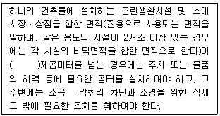
- 1천
- 3천
- 5천
- 1만
(정답률: 47%)
36. 미국조경가협회(ASLA, 1974)가 채택한 조경의 정의 중에 속하는 내용은?
- 경관의 조성과 관리
- 문화적ㆍ과학적 지식의 활용
- 자원활용을 위한 토지의 개발
- 단지의 효율적 계획과 설계
(정답률: 58%)
37. 다음 중 환경영향평가법령의 설명으로 옳지 못한 것은?
- 환경영향평가는 환경에 영향을 미치는 실시계획ㆍ시행계획 등의 허가ㆍ인가ㆍ승인ㆍ면허 또는 결정 등을 할 때에 해당 사업이 환경에 미치는 영향을 미리 조사ㆍ예측ㆍ평가하여 해로운 환경영향을 피하거나 제거 또는 감소시킬 수 있는 방안을 마련하는 것을 말한다.
- 환경영향평가사는 환경 현황 조사, 환경영향예측ㆍ분석, 환경보전방안의 설정 및 대안 평가 등을 통하여 환경영향평가서 등의 작성 등에 관한 업무를 수행하는 사람으로서 관련 조항에 따른 자격을 취득한 사람을 말한다.
- 환경영향평가등은 계획의 수립이나 사업의 시행으로 영향을 받게 되는 지역으로서 환경영향을 과학적으로 예측ㆍ분석한 자료에 따라 그 범위가 설정된 지역에 대하여 실시하여야 한다.
- 사업자는 협의 내용의 적정한 이행관리를 위하여 협의 내용 감리책임자를 지정하여 대통령령으로 정하는 바에 따라 승인기관의 장에게 통보하여야 한다.
(정답률: 59%)
38. 기존의 레크레이션으로 기회에 참여 또는 소비하고 있는 수요를 무엇이라 하는가?
- 유도수요
- 유효수요
- 잠재수요
- 표출수요
(정답률: 62%)
39. 환경용량(Environmenental Capacity)의 개념을 설명한 것 중 가장 거리가 먼 것은?
- 성장의 한계를 우선적으로 전제한다.
- 재생가능한 자연자원이 지탱할 수 있는 유기체의 최대 규모를 말한다.
- 비가역적인 손상을 자연시스템에게 가하는 인간 활동의 한계를 의미한다.
- 다른 조건이 동일하다면 더 넓고 자연자원이 적을수록 더 큰 환경용량을 가진다.
(정답률: 67%)
40. 주택단지의 밀도 중 주거목적의 주택용지만을 기준으로 한 것을 무엇이라 하는가?
- 총밀도
- 순밀도
- 용지밀도
- 근린밀도
(정답률: 72%)
3과목: 조경설계
41. 다음 조경설계기준에서 흙쌓기층의 배수와 관련된 설명 중 ( )안에 적합한 숫자는?
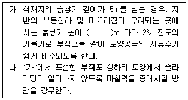
- 2
- 3
- 5
- 10
(정답률: 55%)
42. 조경설계기준 중 어린이를 위한 놀이공간 배치로 틀린 것은?
- 어린이의 이용에 편리하고, 쾌적성을 확보하기 위하여 건물의 그림자 등 음영지역에 설계한다.
- 이용자의 연령별 놀이특성을 고려하여 어린이 놀이터와 유아놀이터로 구분한다.
- 설계대상의 성격ㆍ규모ㆍ이용권ㆍ보행동선 등을 고려하여 놀이공간을 균형 있게 배치한다.
- 놀이공간은 입지에 따라 규모ㆍ형상을 달리함으로써 장소별 특성을 갖도록 한다.
(정답률: 76%)
43. 항공사진은 광범위한 지역에서의 생태적, 지형학적 자료를 취득하는 기본적인 수단이 된다. 다음 중 항공사진의 축척을 구하는 식은?
- (카메라 렌즈 초점거리) ÷ (지면으로부터 높이)
- (지면으로부터 높이) ÷ (카메라 렌즈 초점거리)
- (두 지점간의 지상거리) ÷ (두 지점간의 사진상거리)
- (두 지점간의 지상거리) ÷ (지면으로부터 높이)
(정답률: 48%)
44. 동일한 방향으로 움직이는 요소들이 동일한 그룹으로 보이는 원리를 “방향성 원리(common fate)"라 한다. 이원리의 기초가 되는 것은?
- 근접성
- 완결성
- 연속성
- 유사성
(정답률: 42%)
45. A5 제도용지의 면적은 A2 제도용지와 비교할 때 얼마나 차이가 나는가?
- 1/2
- 1/4
- 1/8
- 1/16
(정답률: 70%)
46. 경관유형을 독특한 지형을 지닌 경관(feature landscape), 위요된 경관(enclosed landscape), 구심적 경관(focal landscape)으로 나누고 각유형별 경관에서의 경관훼손 가능성이 높은 곳을 제시한 연구자는?
- McHarg
- Iverson
- Litton
- Leopold
(정답률: 53%)
47. 다음 중 시방서에 대한 설명으로 틀린 것은?
- 의미전달이 잘 되게 작성해야 한다.
- 설계도나 계산서만으로 표시할 수 없는 사항을 문서로 작성한 것이다.
- 표준시방서는 시설물별 전문시방서를 기본으로 한다.
- 작성하는 사람은 설계ㆍ시공재료 등 공사 전반에 걸쳐 풍부한 경험과 지식이 있어야 한다.
(정답률: 77%)
48. 다음의 노외주차장의 설치에 대한 계획기준 내용 중 ( )안에 알맞은 것은?
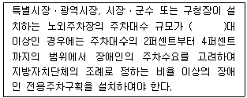
- 30
- 50
- 100
- 200
(정답률: 63%)
49. 색의 시인성에 대한 설명으로 틀린 것은?
- 명도차가 클수록 시인성이 높다.
- 지하철 차량의 노선도, 스포츠 유니폼 색 분류 등에 활용된다.
- 도로의 이정표, 공원의 안내문, 다양한 사인물 등에 활용된다.
- 대상의 존재나 모양이 멀리서 보아도 색채나 문자를 정확히 인지하기 쉬운 정도를 말한다.
(정답률: 58%)
50. 다음은 광장의 너비와 건물의 높이에 의해 형성되는 느낌이다. 건물이 시야의 상한선인 30°보다 높이 있으므로 완전 폐쇄감을 느끼게 하는 것은? (단, D : 광장의 너비, H : 건물 높이)
- D / H = 1
- D / H = 2
- D / H = 3
- D / H = 4
(정답률: 64%)
51. 그림과 같은 제3각 정투상도의 입체도로 가장 적합한 것은?
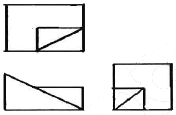
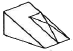
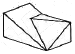
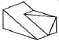
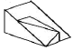
(정답률: 74%)
52. 다음 중 조경설계기준 상의 『수경시설』과 관련된 설명으로 틀린 것은?
- 「수조」는 물이 담수되는 공간을 말하며, 자연형수조와 인공형수조로 나눈다.
- 폭포 전면의 수조너비는 폭포 높이와 같도록 하되, 폭포형태와 연출방법에 따라 폭포 높이의 1/2배, 2/3배로 할 수 있다.
- 계류의 유량산출시 장애물이 없는 개수로의 유량산출은 프란시스의 공식 등을 적용한다.
- 분수의 경우 수조의 너비는 분수 높이의 2배, 바람의 영향을 크게 받는 지역은 분수 높이의 4배를 기준으로 한다.
(정답률: 58%)
53. 대지의 모양, 고저, 치수, 건축물의 평면형과 치수, 방위, 대지 경계선까지의 거리가 표현되는 도면은?
- 조감도
- 배치도
- 단면도
- 입면도
(정답률: 58%)
54. 조경설계기준 중 안내시설 설치 시 고려해야 할 기본적인 전제 조건으로 옳지 않은 것은?
- 설계대상공간의 주변 환경과 조화를 갖도록 한다.
- 식별성 보다는 우선적으로 아름다움을 고려한다.
- 부지내의 다른 표지판, 게시판들과 조화되어야 한다.
- 다양한 유형이 한 장소에 설치될 경우에는 종합표지판과 이를 보조할 표지판으로 구분하여 배치한다.
(정답률: 78%)
55. 대지면적 5,000m2, 조경의무면적 750m2, 식재의무면적 375m2, 설계조경면적 1,000m2, 교목식재기준 0.2주/m2 일 때 녹지지역의 교목식재 수량 기준은? (단, 국토교통부 조경기준을 적용한다.)
- 1000주 이상
- 150주 이상
- 100주 이상
- 74주 이상
(정답률: 53%)
56. 어두운 곳에서 빛의 파장이 긴 적색이나 황색은 희미하게, 파장이 짧은 청색이나 녹색은 밝게 보이는 현상은?
- 잔상
- 색순응
- 밝기의 항상성
- 푸르키니에 현상
(정답률: 76%)
57. 다양한 구성 요소끼리 하나의 규칙으로 단일화 시키는 원리는?
- 대비
- 통일
- 연속
- 반복
(정답률: 69%)
58. 다음 중 비대칭 균형의 미가 가장 강조되는 정원 형식은?
- 기하학식 정원
- 정형식 정원
- 노단식 정원
- 자연주의식 정원
(정답률: 66%)
59. 독립벽체나 휀스(fence)의 환경 조성상의 기능이 아닌 것은?
- 시선의 차폐
- 공간의 한정
- 상이한 기능의 통합
- 시각적 요소로서의 기능
(정답률: 69%)
60. 조경설계기준 관련 『앉음벽』 과 『야외탁자』 의 설계사항으로 틀린 것은?
- 야외탁자의 너비는 30 ~ 40cm를 기준으로 한다.
- 야외탁자를 보행로에 배치할 경우에는 보행동선과 충돌이 일어나지 않도록 완충공간을 확보한다.
- 앉음벽은 짧은 휴식에 적합한 재질과 마감방법으로 설계하며, 높이는 34 ~ 46cm를 원칙으로 한다.
- 앉음벽은 지형의 높이차 극복을 위한 흙막이 구조물을 겸할 경우에는 녹지보다 5cm 높게 마감하도록 설계하며, 녹지의 심토층 배수를 고려한다.
(정답률: 60%)
4과목: 조경식재
61. 다음 중 군집에서 우점도지수와 관련이 없는 것은?
- 생체량
- 층위형성량
- 각 중요도의 총화
- 각 종개체군이 갖는 중요도의 수치
(정답률: 48%)
62. 다음 굴취 및 운반방법에 대한 설명 중 옳지 않은 것은?
- 뿌리분의 둘레는 원형으로, 측면은 수직으로, 저면은 둥글게 다듬어야 한다.
- 뿌리분의 외부로 돌출한 굵은 뿌리는 약간 길게 톱질하여 자르며, 세근은 가급적 잘라버린다.
- 운반에 지장을 받지 않도록 무리가 가지 않는 범위에서 가지를 새끼, 밧줄 등으로 잡아맨다.
- 수목굴취 시 수고 4.5m 이상의 수목은 감독자와 협의하여 가지주를 설치하고 가지치기, 기타 양생을 하여 작업에 착수한다.
(정답률: 71%)
63. 식재의 기능구분에 있어 공간조절에 해당되는 것은?
- 지피식재
- 지표식재
- 유도식재
- 녹음식재
(정답률: 49%)
64. 다음 그림은 어떤 미적원리가 무시된 것인가?
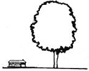
- 반복
- 율동
- 초점
- 비례
(정답률: 72%)
65. 화서의 종류와 수종의 연결이 잘못된 것은?
- 단정화서 - 모란
- 취산화서 - 작살나무
- 총상화서 - 때죽나무
- 수상화서 - 덜꿩나무
(정답률: 42%)
66. 다음 수목의 학명 중 종명이 의미하는 것으로 옳은 것은?
- 느티나무(serrata) : 잎이 두 개로 갈라진다는 뜻
- 은행나무(biloba) : 팽이모양이라는 뜻
- 칠엽수(turbinata) : 잎에 톱니가 있다는 뜻
- 화살나무(alatus) : 날개가 있다는 뜻
(정답률: 62%)
67. 메타세쿼이아와 낙우송에 대한 설명으로 옳지 않은 것은?
- 원산지는 모두 미국이다.
- 낙우송에는 기근이 발생한다.
- 성상은 모두 낙엽침엽교목이다.
- 잎의 배열은 메타세쿼이아는 대생이지만 낙우송은 호생이다.
(정답률: 60%)
68. 다음 중 뿌리에 근류균(根瘤菌)을 갖는 비료(肥料木) 수종에 해당하지 않는 것은?
- 싸리(Lespedeza bicolor Turcz,)
- 자귀나무(Albizia julibrissin Durazz.)
- 보리수나무(Elaeagnus umbellata Thunb.)
- 때죽나무(Styrax japonicus Siebold & Zucc.)
(정답률: 52%)
69. 느티나무를 6 m 간격으로 2km에 걸쳐 한 줄 심는 것은 어떤 식재 형식에 해당되는가?
- 표본식재
- 대식
- 교호식재
- 열식
(정답률: 73%)
70. 다음 [보기]의 식물군집 구조 내용은 어느 지역에 해당되는가?
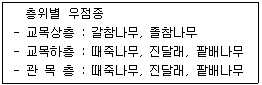
- 중부지역 도시숲
- 해안도서 지방의 산림
- 폐농된 농촌지역의 산림
- 우리나라의 전형적인 온대 극상림
(정답률: 51%)
71. 다음 중 [보기]의 설명에 적합한 수종은?
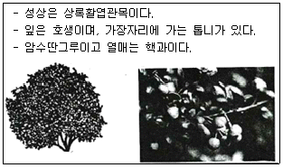
- Buxus koreana
- Euonymus japonicus
- Ilex crenata
- Aucuba japonica
(정답률: 48%)
72. 다음 설명하는 수종으로 옳은 것은?
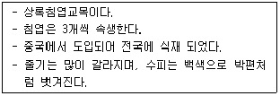
- Pinus paruiflora
- Pinus bungeana
- Pinus pumila
- Pinus rigida
(정답률: 58%)
73. 한지형 잔디가 아닌 것은?
- Zoysiagrass
- Tall fescue
- Perennial ryegrass
- Kentucky bluegrass
(정답률: 60%)
74. 다음 중 우리나라 특산수종이 아닌 것은?
- 매자나무
- 구상나무
- 굴피나무
- 개느삼
(정답률: 44%)
75. 파골라(그늘시렁)에 올리는 등나무, 능소화 등의 만경류의 규격 표시로 가장 적합한 것은?
- 수고(m) × 수관폭(m)
- 수고(m) × 흉고직경(cm)
- 수고(m) × 근원직경(cm)
- 수고(m) × 수관폭(m) × 가지수
(정답률: 45%)
76. 식생도에 관한 설명으로 옳지 않은 것은?
- 세밀한 식생조사를 위해서 대축척의 식생도를 만든다.
- 식생에 대한 분포를 시각적으로 알 수 있게 한다.
- 식생도는 분포의 입지 관련 해석의 실마리를 제공해 준다.
- 대상(代償)식생이란 원래의 자연환경 조건에서 존재하였던 식생을 말한다.
(정답률: 62%)
77. 수목의 종류에 관계없이 먼저 제거해야 할 가지가 아닌 것은?
- 고사지 및 생장이 멈춘 약간 가지
- 채광과 통풍 등의 장해가 되는 가지
- 상처를 입어 꺾어 질 위협이 있는 가지 및 생육상 불필요한 가지
- 주간의 초두부가 손상된 상태에서 후보지가 될 수 있는 도장지
(정답률: 66%)
78. 흙입자와 물과의 결합력을 토양수분력(pF)이라고 하는데, 식물이 이용 가능한 모관수(유효수)의 pF값 범위로 가장 적합한 것은?
- 0 ~ 1.4
- 1.5 ~ 2.5
- 2.7 ~ 4.2
- 4.5 ~ 7.0
(정답률: 57%)
79. 다음 중 구상나무의 학명은?
- Abies koreana
- Abies nephrolepis
- Abies holophylla
- Cedrus deodara
(정답률: 63%)
80. 녹음용(綠陰用) 수목으로 적합한 것은?
- 은행나무, 흰말채나무
- 멀구슬나무, 붉나무
- 호랑가시나무, 벽오동
- 피나무, 팽나무
(정답률: 56%)
5과목: 조경시공구조학
81. 감락석이 변질된 것으로 암녹색 바탕에 아름다운 무늬를 갖고 있으나 풍화성이 있어 실내장식용으로 사용되는 것은?
- 사문암
- 안산암
- 응회암
- 현무암
(정답률: 43%)
82. 콘크리트의 건조수축, 구조물의 균열 및 변형을 방지할 목적으로 사용되는 혼화재료는?
- 지연제(Retarder)
- 플라이애시(Fly ash)
- 실리카흄(Silica fume)
- 팽창재(Expansive producing admixtures)
(정답률: 49%)
83. 석재의 가공법을 순서대로 나열한 것은?
- 원석 → 메다듬 → 정다듬 → 도드락다듬 → 잔다듬 → 광내기
- 원석 → 정다듬 → 도드락다듬 → 잔다듬 → 메다듬 → 광내기
- 원석 → 메다듬 → 잔다듬 → 정다듬 → 도드락다듬 → 광내기
- 원석 → 메다듬 → 잔다듬 → 도드락다듬 → 정다듬 → 광내기
(정답률: 61%)
84. 기계정비의 계상(計上) 요소가 아닌 것은?
- 기계손료
- 운전경비
- 조립, 해체비
- 기계구입비
(정답률: 46%)
85. 금속의 부식에 대한 대책으로 틀린 것은?
- 큰 변형을 준 것은 가능한 한 풀림하여 사용할 것
- 표면을 거칠게 하고 가능한 한 습윤상태로 유지할 것
- 가능한 한 이종 금속은 이를 인접, 접속시켜 사용하지 않을 것
- 균질한 것을 선택하고 사용할 때 큰 변형을 주지 않도록 할 것
(정답률: 72%)
86. 다음 설명하는 도장 방법은?
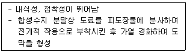
- 분체도장
- 소부도장
- 합성도장
- 침적도장
(정답률: 54%)
87. 평판측량의 방사법에 관한 설명으로 옳은 것은?
- 기기를 통한 관측으로 구하고자 하는 미지점의 좌표를 직접 얻을 수 있는 방법으로 지형의 모습을 도해적으로 직접 확인할 수 있는 장점이 있다.
- 기준점을 두 점 이상 취하여 기준점으로부터 미지점을 시준하여 방향선을 교차시켜 도면상에서 미지점의 위치를 결정하는 방법이다.
- 어느 한 점에서 출발하여 측점의 방향과 거리를 측정하고 다음 측점으로 평판을 옮겨 차례로 측정하는 방법으로 측량 지역이 좁고 긴 경우에 적당하다
- 한 지점에 평판을 세우고 방향과 거리를 측정하는 방법으로 시준을 방해하는 장애물이 없고 비교적 좁은 지역에 대축척으로 세부측량을 할 경우 효율적이다.
(정답률: 53%)
88. 초화류 식재시 특수화단(화문화단, 리본화단 등)은 얼마까지 가산할 수 있는가? (단, 건설공사표준품셈을 적용한다.)
- 5%
- 10%
- 15%
- 20%
(정답률: 40%)
89. 안전율을 고려하여 허용응력을 구조재의 최고 강도보다 상당히 적게 하는 이유로 틀린 것은?
- 시공상의 문제로 불완전한 점이 발생할 수 있다.
- 구조계산과정에서 발생하는 계산 착오를 고려한 것이다.
- 재료가 부식하거나 풍화하여 부재단면이 감소 할 수 있다.
- 구조재료의 성질이 반드시 같지 않으며, 내부 결함이 있을 수 있다.
(정답률: 55%)
90. 다음 살수기 설치와 관련된 설명으로 옳지 않은 것은?
- 도시상수관에 설치시 급수계량기는 급숙관보다 한 단계 작은 크기로 보통 설치한다.
- 지하 급수관에서 지표면 살수기까지의 작동압력도 고려해야 한다.
- 급수용량은 급수계량기를 통한 양을 최대 안전흐름으로 본다.
- 살수시의 물분포 현황은 85 ~ 95%의 균등계수를 갖는 것이 효과적이다.
(정답률: 32%)
91. 흙의 안식각에 관한 설명으로 옳지 않은 것은?
- 자연 붕괴가 끝나면 안식각이 형성된다.
- 일반적으로 흙의 입자가 클수록 안식각도 커진다.
- 안식각보다 작게 경사면을 조성하면 붕괴위험이 있다.
- 경사지, 둑의 비탈면은 심한 침식이나 산사태 방지를 위해 토양의 자연적인 안식각을 넘지 않아야 한다.
(정답률: 57%)
92. 환경문제 해결에 부응하는 특수 콘크리트 중 제올라이트(zeolite) 등을 콘크리트에 적용하여 습도상승 등을 억제하는 콘크리트는?
- 조습성 콘크리트
- 저소음 콘크리트
- 자원순환 콘크리트
- 다공질 식생 콘크리트
(정답률: 68%)
93. 네트워크 공정을 작성하는 순서로 가장 적합한 것은?
- 흐름도 → 타임스케일도 → 애로우도 → 작업리스트
- 작업리스트 → 흐름도 → 애로우도 → 타임스케일도
- 작업리스트 → 타임스케일도 → 애로우도 → 흐름도
- 흐름도 → 애로우도 → 타임스케일도 → 작업리스트
(정답률: 48%)
94. 시멘트의 수화반응에 의해 생성된 수산화칼슘이 대기 중의 이산화탄소와 반응하여 pH를 저하시키는 현상을 무엇이라고 하는가?
- 염해
- 중성화
- 동결융해
- 알칼리 - 골재반응
(정답률: 62%)
95. 목재의 탄성계수에 관한 설명으로 옳은 것은?
- 강도에 반비례한다.
- 함수율에 비례한다.
- 모든 목재가 동일하다.
- 비중이 증가할수록 탄성계수도 증가한다.
(정답률: 44%)
96. 식재공사에서 재료비 5,000,000원, 직접노무비는 3,000,000원, 경비는 2,000,000원, 간접노무비율은 15% 일 때, 일반관리비는 얼마인가? (단, 일반관리비율은 6% 이다.)
- 600,000원
- 6⑤,000원
- 620,000원
- 627,000원
(정답률: 41%)
97. 다음 중 배수능력이 가장 떨어지며 쉽게 막히기도 하지만 지표면에서 흡수된 물을 배수하기 위한 심토층 배수형태는?
- 오지토관
- 플륨관
- 맹암거
- 명거
(정답률: 68%)
98. 다음 중 구리(Gu)와 주석(Sn)을 주체로 한 합금으로 주조성이 우수하고 내식성이 크며 건축장식철물 또는 미술공예재료에 사용되는 것은?
- 양백
- 황동
- 청동
- 두랄루민
(정답률: 58%)
99. 다음 내민보에서 B점의 모멘트와 C점의 모멘트의 절대값의 크기를 같게 하기 위한 L/A의 값을 구하면?
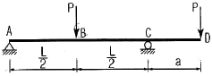
- 2
- 3
- 4
- 6
(정답률: 24%)
100. 그림과 같은 삼각형 ABC의 토지를 변 BC에 평행한 선분 DE로서 면적 m : n이 2 : 3이 되게 분할하고자 한다. 이 때 선분 AD의 길이(m)는?
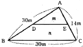
- 18.520
- 18.974
- 19.254
- 20.000
(정답률: 40%)
6과목: 조경관리론
101. 탈질작용(Denitrification)에 관한 설명으로 가장 적합한 것은?
- 무기태질소화합물이 유기태로 변화하는 것을 말한다.
- 유기태질소화합물이 분해되어 암모늄태질소가 생성되는 작용을 말한다.
- 질산염의 화합물이 혐기적 세균에 의하여 N2, NO,N2O를 생성하는 것을 말한다.
- 유기태질소화합물이 무기태로 변환하는 것으로 자연적인 포장상태에서 미생물의 활동에 의하여 일어난다.
(정답률: 44%)
102. 철분 결핍에 의해 수목에 나타나는 전형적인 이상 증상은?
- 황화
- 반점
- 썩음
- 마름
(정답률: 55%)
103. 다음 중 6대 조암광물(造巖鑛物)에 속하지 않는 것은?
- 운모(mica)
- 석영(quartz)
- 감람석(olivine)
- 인회석(apatite)
(정답률: 48%)
104. 파이토플라스마(Phytoplasma)는 다음 중 어느 것에 감수성인가?
- Benlate
- Penicillin
- Streptomycin
- Tetracycline
(정답률: 44%)
1⑤. 다음 중 줄기감기 양생이 가장 필요한 수목은?
- 한대성 조경 수목
- 중기가 곧은 침엽수
- 이른 봄에 꽃이 피는 화목류
- 수피가 얇고 매끄러운 활엽수
(정답률: 52%)
106. 라지패치(large patch)에 대한 설명으로 틀린 것은?
- 원형 또는 동공형 병징이 형성된다.
- 한국잔디 등 난지형 잔디에서 발생률이 높다.
- 비가 많이 오는 봄, 가을에 많이 발병하고 온도가 15℃전후에 발생이 심하다.
- 북더기 잔디(thatxch)의 집적을 유도하여 지면 보온효과를 높여 방제한다.
(정답률: 53%)
107. 수목관리와 관련하여 관수 시 고려해야 할 사항 중 가장 거리가 먼 것은?
- 강우빈도
- 토양수분 함량
- 지주목 설치여부
- 지하수위의 고저
(정답률: 64%)
108. 사철나무 흰가루병에 대한 설명으로 틀린 것은?
- 휴면기 12 ~ 2월에는 석회황합제로 방제한다.
- 한번 발생한 나무에서는 거의 매년 되풀이해서 발생한다.
- 병에 걸린 나무의 접수나 분주묘와 같은 영양번식체를 통해서 전염된다.
- 햇빛이 잘 들지 않고 바람이 잘 통하지 않는 곳에 있는 수종에 잘 발생한다.
(정답률: 48%)
109. 아스팔트 파손상태에 따른 보수방법 중 포장이 균열되었거나 국부적 침하, 부분적 박리일 때 적용하는 공법은?
- overlay 공법
- fog seal 공법
- slurry seal 공법
- patching 공법
(정답률: 65%)
110. 다음 중 표징이 나타나지 않는 병은?
- 잣나무 털녹병
- 대추나무 빗자루병
- 단풍나무 타르점무늬병
- 소나무류 피목가지마름병
(정답률: 47%)
111. 다음 원소 중 식물체 내에서 이동이 어려운 영양소는?
- P
- K
- Mg
- B
(정답률: 55%)
112. 유제나 액제와 같이 액상의 농약을 제조할 때 주제(원제)를 녹이기 위하여 사용하는 보조제 물질은?
- 협력제
- 용제
- 증량제
- 유화제
(정답률: 45%)
113. 잎을 가해하는 식엽성 해충은?
- 밤바구니
- 박쥐나방
- 재주나방
- 전나무잎응애
(정답률: 40%)
114. 유희시설의 유지관리에 대한 내용이 틀린 것은?
- 철재는 방청처리한다.
- 놀이터 내에 물이 고이는 곳이 없도록 한다.
- 바닥모래는 가급적 가는 세사(細沙)를 깔아야 한다.
- 파손된 시설물은 사용하지 못하도록 보호조치 한다.
(정답률: 64%)
115. 보수력이 가장 큰 토양의 토성은?
- 사양토
- 식토
- 양토
- 사토
(정답률: 49%)
116. 한국잔디의 정기적인 유지관리 항목으로 가장 거리가 먼 것은?
- 관수
- 시비
- 제초
- 병해충 방제
(정답률: 43%)
117. 병원체가 기주조직 내에 침입하고 정착하여 기생관계가 성립되는 과정을 무엇이라 하는가?
- 병징
- 표징
- 감염
- 발병
(정답률: 65%)
118. 저온 피해를 받은 수목의 관리로 옳은 것은?
- 원칙적으로 강전정을 실시한다.
- 시비는 겨울철에 하는 것이 바람직하다.
- 저온 피해를 받을 경우 물을 주지 않는다.
- 동해를 입은 상록수의 엽침은 전정을 하지 않는다.
(정답률: 49%)
119. 조경관리 중 유지관리 영역이 아닌 것은?
- 식재수목 관리
- 야생식물 관리
- 안전관리
- 기반시설물 관리
(정답률: 49%)
120. 옥외레크리에이션 『자원관리』에 대한 설명 중 틀린 것은?
- 경관관리는 자원관리에 포함되지 않는다.
- 자원관리는 모니터링과 프로그래밍의 2단계로 구성된다.
- 안전관리는 잠재된 장해요인을 제거하거나 허용한계 이하로 축소시키는 방법이다.
- 부지관리는 자연환경의 질을 유지, 회복시키기 위해 개발된 부지를 관리하는 방법이다.
(정답률: 56%)